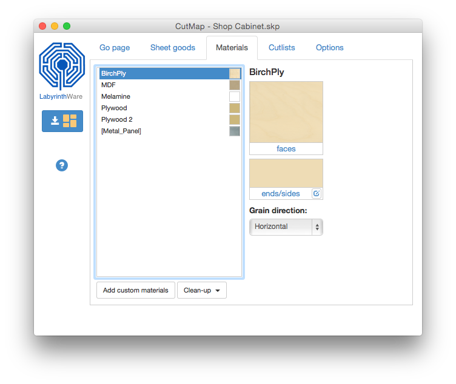

<div class="container bs-docs-container">
  <div class="row">
    <div class="col-md-12" role="main">
      <div class="cm-docs-section">


        <h2 id="cm-materials" class="page-header">Using Materials</h2>
        <p>
          CutMap uses materials to match boards to sheets. You identify a sheet with a material in CutMap and then apply the same material to boards in your model. Boards whose material match a sheet material are cut from a sheet of that type.
        </p>
        <p>
          For instance, let's say you are planning to make a cabinet using 8'x4' sheets of birch plywood.</p>
        <ul>
          <li>Select a material in SketchUp that is a good match this wood. CutMap installs a material named "BirchPly" which you could use for this.</li>

          <li>Define, or select an existing, sheet good of that size in the CutMap <em>Sheet goods</em>  page, and then identify it with the "BirchPly" material. Make sure the sheet definition is made <em>Available</em> and selected for your current project.</li>
          <li>Apply this same material to the components in your model using SketchUp <em>Paint</em> tool .</li>
          </ul>
        <p>
          The video below illustrates defining a material for a sheet and then applying that material to the boards in a model.
        </p>

        <!-- 16:9 aspect ratio -->
        <div class="embed-responsive embed-responsive-16by9">
          <iframe class="embed-responsive-item"
            src="https://www.youtube.com/embed/nfWkY-y4X0I" allowfullscreen>
          </iframe>
        </div>
        <br/>
        <p><span style="font-weight: bold;">One important note:</span> If you select a material from the SketchUp palette that is not already used in your model, or in the CutMap Window, you will not be able to manage it using CutMap until you paint something in your model with this material. The reason for this is that until a material is used in the model SketchUp does not make it visible to the extension. See this FAQ for a workaround:</p>

        <a class="collapseBtn" role="button" data-toggle="collapse" href="#faqNewMaterial" aria-expanded="false" aria-controls="faqPartsInScene">
          Why after I select a new material the name sometimes does not show up in the <em>CutMap: Apply Material</em> context menu item?&nbsp;<div class="glyphicon glyphicon-triangle-bottom"></div><br>
        </a>
        <div class="collapse" id="faqNewMaterial">
          <div class="well">
            <p>If the material has not not been used in your model it is not possible for CutMap to discover the name. SketchUp just doesn't make the selection available until its been used in the model.</p>
            <p>A workaround is to simply paint something in your model with the newly selected material. Now that the material is in the model it will show up in the menu item and in the <em>Materials</em> tab in the CutMap window. You can always remove the material later using the <em>CutMap: Remove material <span class="glyphicon glyphicon-menu-right"></span> all materials</em> context menu item.</p>
            <p>Note that this isn't a problem with CutMap's default materials unless you have purged unused materials in your model.</p>

          </div>
        </div>

        <h2 id="cm-materials-advanced" class="page-header">More on Materials</h2>
          CutMap has other features to help make using materials easier in SketchUp.
          <ul>
        <li>A <em>Materials</em> page to view and manage the materials in your model.</li>
        <li>Custom materials are pre-loaded into SketchUp when CutMap is first invoked for a model. These materials are pre-loaded to make CutMap easier to use the first time user. </li>
        <li>More custom materials can be loaded from the CutMap <em>Materials</em> page using the <em>Add custom materials</em> button.</li>
        <li>You can select a material for the SketchUp Paint tool by clicking on any material patch visible in CutMap.</li>
        <li>You can create material combinations that have end/edge grain images different than the face grain. This can give your painted model a more natural look.</li>
         <li>Using the CutMap <em>Snap-to</em> tool you can easily rotate materials in your model to match your intended grain direction.</li>
        </ul>
        <h3>Materials Page</h3>
        <p>
          On the Cutlist <em>Materials</em> page you can view and manage all the materials in your model. On this page you can select materials for the Paint tool, define combination materials, add custom CutMap provided materials, and clean-up unused materials and components.
        </p>
        <div class="pop">
          
        </div>
        <p>
          On the left is a list of all materials in your model, and on the right the details of the currently selected material.
        <table class="table table-bordered">
          <!--<thead>-->
          <!--<tr>-->
            <!--<th colspan="2">Details</th>-->
          <!--</tr>-->
          <!--</thead>-->
          <tbody>
          <tr>
            <th class="text-nowrap" scope="row"><em>faces</em></th>
            <td>This is the image or color of the selected material.</td>
          </tr>
          <tr>
            <th class="text-nowrap" scope="row"><em>ends/edges <span class="glyphicon glyphicon-edit"></span></em></th>
            <td>Click this button to change the end grain and edge grain material for the face material selected. The end/edge grain of components will be painted with this material when painted using the special CutMap <em>Apply material</em> menu item. See more about this below.</td>
          </tr>
          <tr>
            <th class="text-nowrap" scope="row"><em>Grain direction</em></th>
            <td>You can specify the direction of the grain in the <em>faces</em> image. This is important if you have checked the <em>Respect grain direction</em> option on the <em>Go</em> page.</td>
          </tr>
          <tr>
            <th class="text-nowrap" scope="row"></th>
            <td>When you hover your mouse over any material patch the cursor changes to an eyedropper. Click to select the material for the SketchUp <em>Paint</em> tool .</td>
          </tr>
          </tbody>
        </table>

        <h3>Custom CutMap materials</h3>
        <p>
          When the CutMap extension is first started it pre-loads a few custom materials into your model. These are loaded so that basic CutMap functions work properly right off the bat. If you don't need these materials in your model you can delete these them using the <em>Clean-up</em> button on the <em>Materials</em> page.
        </p>
        <p>
          More custom materials can be loaded into a model using the <em>Add custom materials</em> button on the <em>Materials</em> page. We have tried to insure that all these materials are free for all usages. Please let us know if you think a material may not be in the public domain.
        </p>

        <h3>Custom CutMap materials</h3>
        <p>
          When the CutMap extension is first started it pre-loads a few custom materials into your model. These are loaded so that basic CutMap functions work properly right off the bat. If you don't need these materials in your model you can delete these them using the <em>Clean-up</em> button on the <em>Materials</em> page.
        </p>


        <div class="callout-downloads">
          <div class="glyphicon glyphicon-cloud-download callout-icon-inset-downloads">
          </div>
          <div class="callout-name-downloads">Downloads</div>
          <br/>
          <ul>
            <li><a href="../../assets/sketchup/Shop%20Cabinet_in_unpainted.skp" download>SketchUp file: Shop Cabinet (unpainted, imperial units)</a></li>
          </ul>
        </div>

        <div class="callout-asterisk">
          <div class="glyphicon glyphicon-asterisk callout-icon-inset-asterisk">
          </div>
          <div class="callout-name-asterisk">Notes</div>
          <br/>
          <ul>
            <li>
          <p>
            Open-source material image project
          </p>
            We would like to curate a group of high quality open-source materials appropriate for furniture and construction. These material images would be available both with CutMap or outside of CutMap. Some desired qualities are:
          <ul>
            <li>Representative grain patterns and colors for as many wood species and cut types (such as quarter-sawn or radially-sawn) as possible.</li>
            <li>Grain patterns that are sized correctly for the specie when applied to a board.</li>
            <li>Repeatable patterns. Most images are too small to cover a large board with one image, and when the image is repeated the lines are very noticeable. A repeatable image is an image that has been photoshopped to hide these transitions.</li>
            <li>Material images for edge grain and end-grain.</li>
          </ul>
              <p>
                If you have any ideas or would like to contribute to this project please let us know.
              </p>
            </li>
            </ul>
        </div>


      </div>
    </div>
  </div>
</div>
